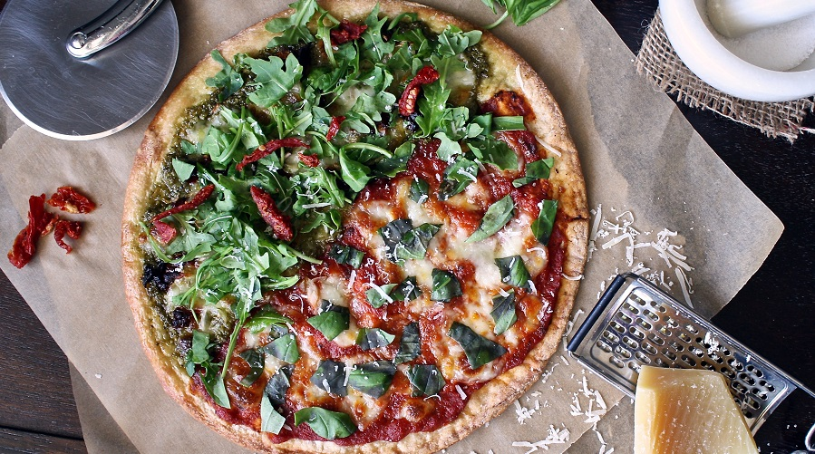

El origen de la pizza
14/12/2014 Tiene mucho que ver con el pan en Italia, ya que en la antigua Roma se acostumbraba a hacer pan de forma circular y cortado en porciones. Años más tarde, a esta masa de harina se le añadirían otros ingredientes como salsa de tomate y queso mozzarella, pero hoy en día la pizza admite una gran variedad de ingredientes como son frutas, verduras carne, pescado, marisco y embutidos.